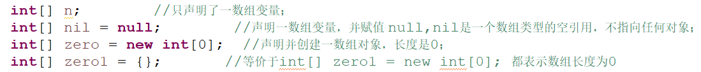

1、 如果一个数组动态初始化后没有存满, .length 的话是显示数组的定义的长度还是存了几个的长度?
当然是显示数组定义的长度了,开辟了多少空间,长度就是多少。不管里面有没有存数据,都是这么长。毕竟里面也还有
默认的初始化数据。
2、java中,字符串String类型的""和null值的区别
String str1 = null; str引用为空
String str2 = ""; str引用一个空串
也就是null没有分配空间，""分配了空间，因此str1还不是一个实例化的对象，而str2已经实例化。
注意因为null不是对象，""是对象。所以比较的时候必须是 if(str1==null){...}和if(str2.equals("")){...}。
对象用equals比较，null用等号比较。
因此，如果str1==null;下面的写法错误：
if(str1.equals("")||str1==null){。。}
//如果str1==null，则str1.equals("")的写法是错误的,会报错,因为某个变
//量(基本类型的变量或者引用类型的变量都一样)的值为null的话,那么根本
//就没有分配空间,所以根本就没有属性和方法,所以根本不能引用,
正确的写法是 :
if(str1==null||str1.equals("")){ //先判断是不是对象，如果是，再判断是不是空字符串
3、java中的变量声明在循环体外和循环体内会不会有性能差距?(可以看下面这篇文章)
事实上并没有, 甚至java官方的源码都是将变量声明在循环内,具体可见HashMap的源码
for (int i = 0; i < 10000; ++i) {
Object obj = new Object();
System.out.println("obj= "+ obj);}
和
Object obj = null;
for (int i = 0; i < 10000; ++i) {
obj = new Object();
System.out.println("obj= "+ obj);}
性能是一样的,因为java编译器会自己优化,也因为有jvm的存在,垃圾会自己回收。而c/c++应该会有差别,因为垃圾要程序员回收
4、java的内部类(一个.java文件中的内部类)
见如下两个链接
5、一个.java文件中可以有多少个同级类(或者说并列类)? (注意和内部类区分)
同一个文件同级的类之间可以互相调用，但是除了public的类，其他不能够在其他文件调用。
6、关于数组为空和为null的区别(一般数组长度为0才叫做数组为空,等于null不叫数组为空)
